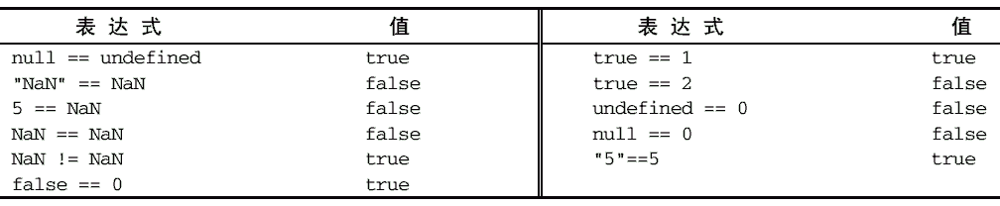

3.5.7 相等操作符
确定两个变量是否相等是编程中的一个非常重要的操作。在比较字符串、数值和布尔值的相等性时，问题还比较简单。但在涉及到对象的比较时，问题就变得复杂了。最早的 ECMAScript 中的相等和不等操作符会在执行比较之前，先将对象转换成相似的类型。后来，有人提出了这种转换到底是否合理的质疑。最后， ECMAScript 的解决方案就是提供两组操作符： 相等和不相等——先转换再比较， 全等和不全等——仅比较而不转换。
1. 相等和不相等
ECMAScript 中的相等操作符由两个等于号（==）表示，如果两个操作数相等，则返回 true。而不相等操作符由叹号后跟等于号（!=）表示，如果两个操作数不相等，则返回 true。这两个操作符都会先转换操作数（通常称为强制转型），然后再比较它们的相等性。
在转换不同的数据类型时，相等和不相等操作符遵循下列基本规则：
-
如果有一个操作数是布尔值，则在比较相等性之前先将其转换为数值——false 转换为 0，而true 转换为 1；
-
如果一个操作数是字符串，另一个操作数是数值，在比较相等性之前先将字符串转换为数值；
-
如果一个操作数是对象，另一个操作数不是，则调用对象的 valueOf()方法，用得到的基本类型值按照前面的规则进行比较；
这两个操作符在进行比较时则要遵循下列规则。
-
null 和 undefined 是相等的。
-
要比较相等性之前，不能将 null 和 undefined 转换成其他任何值。
-
如果有一个操作数是 NaN，则相等操作符返回 false，而不相等操作符返回 true。重要提示：即使两个操作数都是 NaN，相等操作符也返回 false；因为按照规则， NaN 不等于 NaN。
-
如果两个操作数都是对象，则比较它们是不是同一个对象。如果两个操作数都指向同一个对象，则相等操作符返回 true；否则，返回 false。
下表列出了一些特殊情况及比较结果：

2. 全等和不全等
除了在比较之前不转换操作数之外，全等和不全等操作符与相等和不相等操作符没有什么区别。全等操作符由 3 个等于号（===）表示，它只在两个操作数未经转换就相等的情况下返回 true，如下面的例子所示：
var result1 = ("55" == 55); //true，因为转换后相等
var result2 = ("55" === 55); //false，因为不同的数据类型不相等
运行一下
在这个例子中，第一个比较使用的是相等操作符比较字符串"55"和数值 55，结果返回了 true。如前所述，这是因为字符串"55"先被转换成了数值 55，然后再与另一个数值 55 进行比较。第二个比较使用了全等操作符以不转换数值的方式比较同样的字符串和值。在不转换的情况下，字符串当然不等于数值，因此结果就是 false。
不全等操作符由一个叹号后跟两个等于号（!==）表示，它在两个操作数未经转换就不相等的情况下返回 true。例如：
var result1 = ("55" != 55); //false，因为转换后相等
var result2 = ("55" !== 55); //true，因为不同的数据类型不相等
运行一下
在这个例子中，第一个比较使用了不相等操作符，而该操作符会将字符串"55"转换成 55，结果就与第二个操作数（也是 55）相等了。而由于这两个操作数被认为相等，因此就返回了 false。第二个比较使用了不全等操作符。假如我们这样想：字符串 55 与数值 55 不相同吗？，那么答案一定是：是的（true）。
记住： null == undefined 会返回 true，因为它们是类似的值；但 null === undefined 会返回 false，因为它们是不同类型的值。
由于相等和不相等操作符存在类型转换问题，而为了保持代码中数据类型的完整性，我们推荐使用全等和不全等操作符。